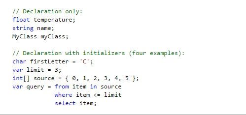

Все типы C# можно разделить на четыре категории:
При объявлении переменной или константы в программе необходимо либо задать ее тип, либо использовать ключевое слово var, чтобы дать возможность компилятору определить его. В следующем примере показаны некоторые объявления переменных, использующие встроенные числовые типы и сложные пользовательские типы
